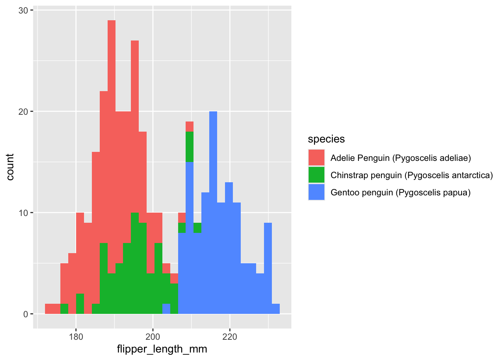
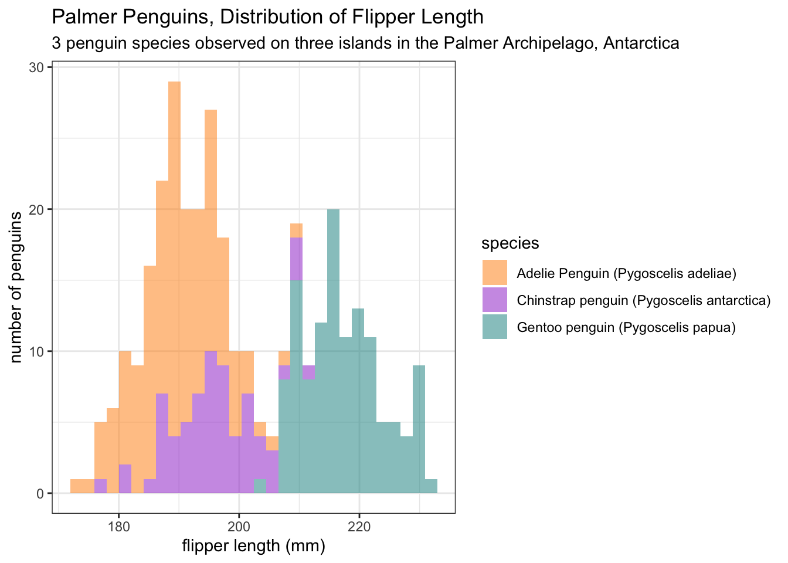
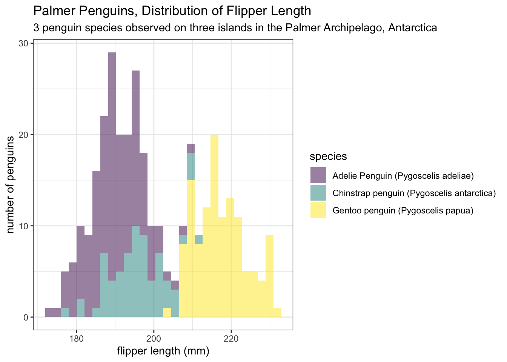
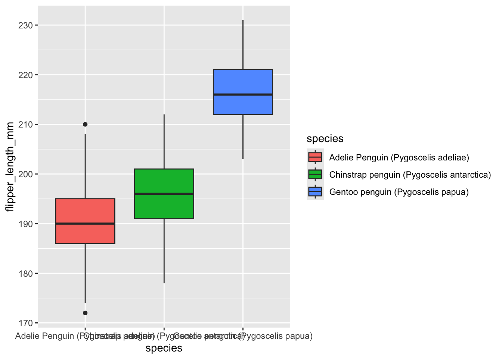
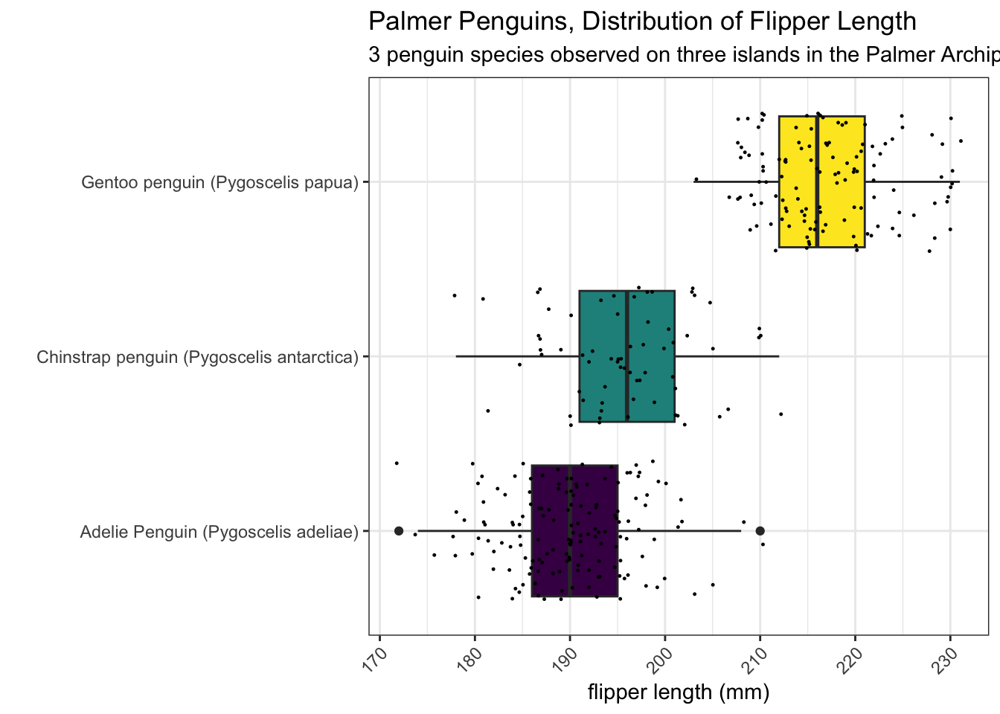
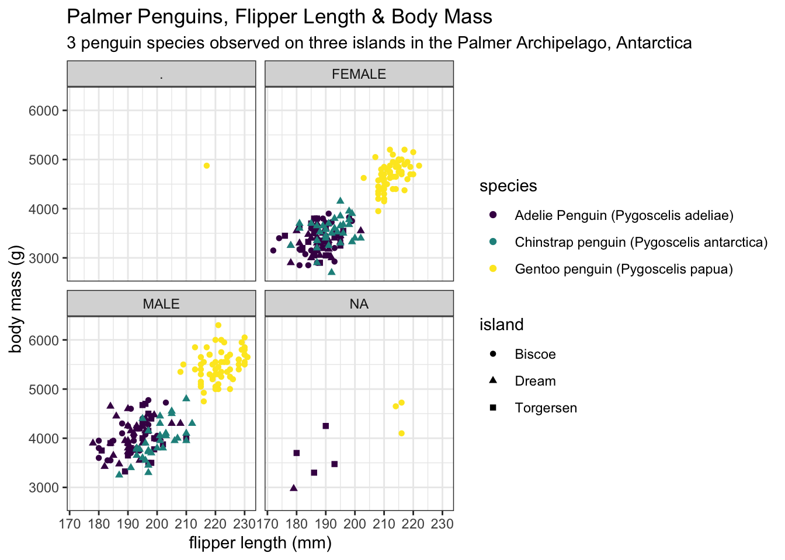
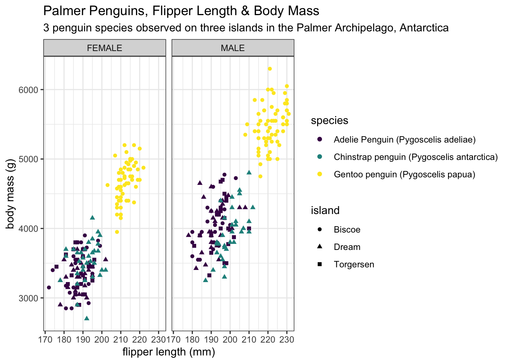
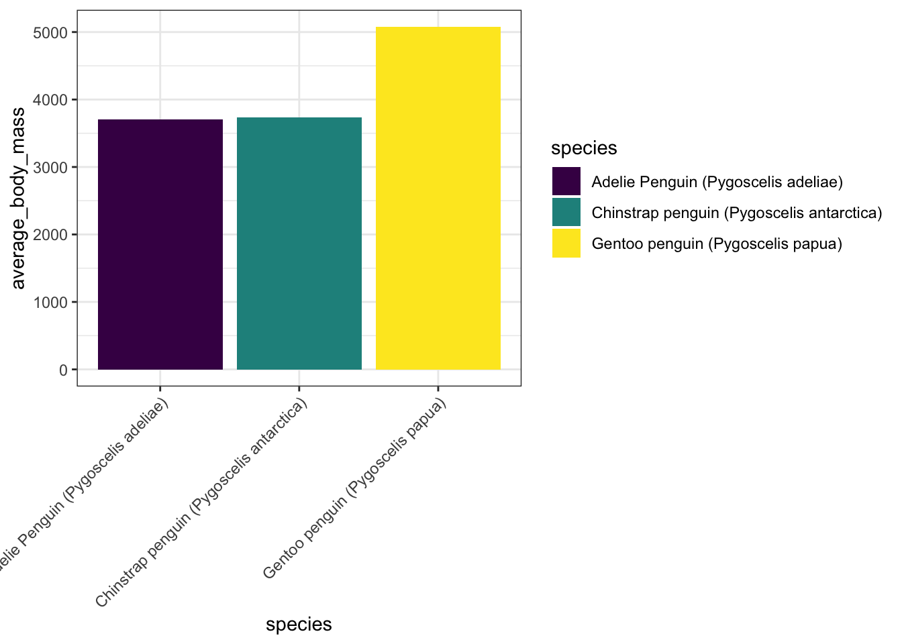
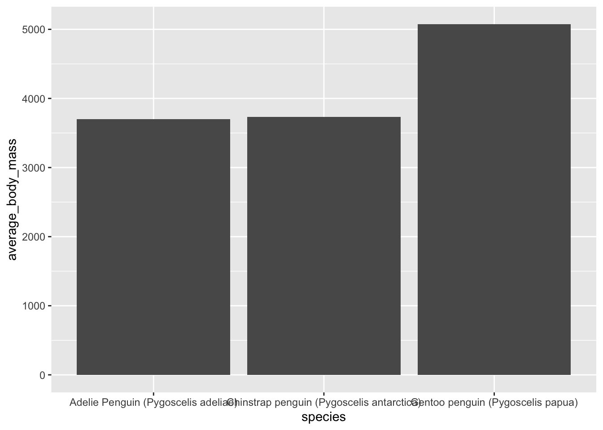

library(tidyverse)
library(here)
library(palmerpenguins)
library(janitor)
library(plotly)Analyzing Penguins Data
Loading Libraries
Reading in Data w/ palmerpenguins
There are multiple options to read data into R
- Data download (manual click) -> Move into project “data” folder -> read_csv() with here()
- Sometimes data is included in packages
- In this case, the penguins data we are going to analyze is included in the palmerpenguins package.
- Download via a URL
Option 1
penguins_data_from_csv <- read_csv(here("data/penguins_lter.csv"))Option 2
penguins_data_from_package <- palmerpenguins::penguinsraw_penguins_data_from_package <- palmerpenguins::penguins_rawOption 3
uri_adelie <- "https://portal.edirepository.org/nis/dataviewer?packageid=knb-lter-pal.219.3&entityid=002f3893385f710df69eeebe893144ff"
adelie_penguins_data_from_url <- read_csv(uri_adelie)Please note that all of these methods of reading data in to R are reproducible meaning that this script should work for anyone using the appropriate steps with Github
Exercise 1
Notice that the data we read in with the link is only for adelie penguins (adelie species). Can you use this link below to read in the data for the gentoo penguins?
In the empty code chunk below, assign the link the name uri_gentoo and assign the dataframe the name gentoo_penguins_data_from_url
Run the code chunk and see if you have a dataframe with the name gentoo_penguins_data_from_url in your environment
https://portal.edirepository.org/nis/dataviewer?packageid=knb-lter-pal.220.3&entityid=e03b43c924f226486f2f0ab6709d2381
uri_gentoo <- "https://portal.edirepository.org/nis/dataviewer?packageid=knb-lter-pal.220.3&entityid=e03b43c924f226486f2f0ab6709d2381"
gentoo_penguins_data_from_uri <- read.csv(uri_gentoo)A Little Data Cleaning
Let’s focus on the dataframe penguins_data_from_csv for learning purposes
If you click on the dataframe in you environment you’ll notice the space in the column names, ex. Culmen Length (mm)
Having spaces in column names often causes headaches, R doesn’t like it, so we always avoid spaces
We can do this with underscores (snakecase)
- culmen_length_mm
We can do this with capitals (camelcase)
- CulmenLengthMm
Lets start by cleaning one column name manually, so you can appreciate the janitor packages’ efficiency
First, with Base R
names(penguins_data_from_csv)[names(penguins_data_from_csv) == "Culmen Length (mm)"] <- "culmen_length_mm"Second, with the dplyr package
penguins_data_from_csv <- penguins_data_from_csv %>%
rename(culmen_depth_mm = "Culmen Depth (mm)")We are lucky our penguins dataframe only has 17 columns, but often times dataframes can have many more. So manually cleaning column names with base R or dplyr is highly inefficient. Here’s where the janitor package, clean_names() function comes to the rescue!
penguins_data_from_csv <- penguins_data_from_csv %>%
clean_names()Awesome, now all of our column names are clean and our dataframe is ready for analysis
Exploratory Analysis
The skim() function from the skimr package gives us a cool overview of the data with one line of code
skimr::skim(penguins_data_from_csv)| Name | penguins_data_from_csv |
| Number of rows | 344 |
| Number of columns | 17 |
| _______________________ | |
| Column type frequency: | |
| character | 10 |
| numeric | 7 |
| ________________________ | |
| Group variables | None |
Variable type: character
| skim_variable | n_missing | complete_rate | min | max | empty | n_unique | whitespace |
|---|---|---|---|---|---|---|---|
| study_name | 0 | 1.00 | 7 | 7 | 0 | 3 | 0 |
| species | 0 | 1.00 | 33 | 41 | 0 | 3 | 0 |
| region | 0 | 1.00 | 6 | 6 | 0 | 1 | 0 |
| island | 0 | 1.00 | 5 | 9 | 0 | 3 | 0 |
| stage | 0 | 1.00 | 18 | 18 | 0 | 1 | 0 |
| individual_id | 0 | 1.00 | 4 | 6 | 0 | 190 | 0 |
| clutch_completion | 0 | 1.00 | 2 | 3 | 0 | 2 | 0 |
| date_egg | 0 | 1.00 | 7 | 8 | 0 | 50 | 0 |
| sex | 10 | 0.97 | 1 | 6 | 0 | 3 | 0 |
| comments | 318 | 0.08 | 18 | 68 | 0 | 7 | 0 |
Variable type: numeric
| skim_variable | n_missing | complete_rate | mean | sd | p0 | p25 | p50 | p75 | p100 | hist |
|---|---|---|---|---|---|---|---|---|---|---|
| sample_number | 0 | 1.00 | 63.15 | 40.43 | 1.00 | 29.00 | 58.00 | 95.25 | 152.00 | ▇▇▆▅▃ |
| culmen_length_mm | 2 | 0.99 | 43.92 | 5.46 | 32.10 | 39.23 | 44.45 | 48.50 | 59.60 | ▃▇▇▆▁ |
| culmen_depth_mm | 2 | 0.99 | 17.15 | 1.97 | 13.10 | 15.60 | 17.30 | 18.70 | 21.50 | ▅▅▇▇▂ |
| flipper_length_mm | 2 | 0.99 | 200.92 | 14.06 | 172.00 | 190.00 | 197.00 | 213.00 | 231.00 | ▂▇▃▅▂ |
| body_mass_g | 2 | 0.99 | 4201.75 | 801.95 | 2700.00 | 3550.00 | 4050.00 | 4750.00 | 6300.00 | ▃▇▆▃▂ |
| delta_15_n_o_oo | 14 | 0.96 | 8.73 | 0.55 | 7.63 | 8.30 | 8.65 | 9.17 | 10.03 | ▃▇▆▅▂ |
| delta_13_c_o_oo | 13 | 0.96 | -25.69 | 0.79 | -27.02 | -26.32 | -25.83 | -25.06 | -23.79 | ▆▇▅▅▂ |
Exercise 2
What other packages/functions do a similar thing?
Try a good ol google search “R package to get in depth description of dataframe”
- How about a Chat GPT search?
Type you answer(s) in bullet points below
Data Visualization
Wohoo!! ggplot is the most common package used for data visualization in R!
Let’s start with the most basic plot we can make
ggplot(data = penguins_data_from_csv, aes(x = flipper_length_mm)) +
geom_histogram()`stat_bin()` using `bins = 30`. Pick better value with `binwidth`.Warning: Removed 2 rows containing non-finite outside the scale range
(`stat_bin()`).
Cool! What if we color the histogram by species
ggplot(data = penguins_data_from_csv, aes(x = flipper_length_mm, fill = species)) +
geom_histogram()`stat_bin()` using `bins = 30`. Pick better value with `binwidth`.Warning: Removed 2 rows containing non-finite outside the scale range
(`stat_bin()`).
Interesting! Seems like flipper length is very dependent on species of penguin
The magic of ggplot is simplicity and customization so let’s customize
ggplot(data = penguins_data_from_csv, aes(x = flipper_length_mm, fill = species)) +
geom_histogram(alpha =0.5) +
theme_bw() +
scale_fill_manual(values = c("darkorange","darkorchid","cyan4")) +
labs(title = "Palmer Penguins, Distribution of Flipper Length",
subtitle = "3 penguin species observed on three islands in the Palmer Archipelago, Antarctica",
x = "flipper length (mm)",
y = "number of penguins")`stat_bin()` using `bins = 30`. Pick better value with `binwidth`.Warning: Removed 2 rows containing non-finite outside the scale range
(`stat_bin()`).
Manually exciting colors is cool, but there are also color palettes available for us with viridis
ggplot(data = penguins_data_from_csv, aes(x = flipper_length_mm, fill = species)) +
geom_histogram(alpha =0.5) +
theme_bw() +
scale_fill_viridis_d() +
labs(title = "Palmer Penguins, Distribution of Flipper Length",
subtitle = "3 penguin species observed on three islands in the Palmer Archipelago, Antarctica",
x = "flipper length (mm)",
y = "number of penguins")`stat_bin()` using `bins = 30`. Pick better value with `binwidth`.Warning: Removed 2 rows containing non-finite outside the scale range
(`stat_bin()`).
Let’s investigate flipper length with another type of data viz
ggplot(data = penguins_data_from_csv, aes(x = species, y = flipper_length_mm, fill = species)) +
geom_boxplot()Warning: Removed 2 rows containing non-finite outside the scale range
(`stat_boxplot()`).
Again, let’s customize!
ggplot(data = penguins_data_from_csv, aes(x = species, y = flipper_length_mm, fill = species)) +
geom_boxplot() +
geom_jitter(size = 0.2) +
theme_bw() +
scale_fill_viridis_d() +
labs(title = "Palmer Penguins, Distribution of Flipper Length",
subtitle = "3 penguin species observed on three islands in the Palmer Archipelago, Antarctica",
x = "",
y = "flipper length (mm)") +
theme(axis.text.x = element_text(angle = 45, hjust = 1, vjust = 1), legend.position = "none") +
coord_flip()Warning: Removed 2 rows containing non-finite outside the scale range
(`stat_boxplot()`).Warning: Removed 2 rows containing missing values or values outside the scale range
(`geom_point()`).
Awesome! Let’s take a look at flipper length and it’s relationship to body mass
ggplot(data = penguins_data_from_csv, aes(x = flipper_length_mm, y = body_mass_g)) +
geom_point()Warning: Removed 2 rows containing missing values or values outside the scale range
(`geom_point()`).
Cool! Let’s add species and island to this plot
ggplot(data = penguins_data_from_csv, aes(x = flipper_length_mm, y = body_mass_g, color = species, shape = island)) +
geom_point() +
theme_bw() +
scale_color_viridis_d() +
labs(title = "Palmer Penguins, Flipper Length & Body Mass",
subtitle = "3 penguin species observed on three islands in the Palmer Archipelago, Antarctica",
x = "flipper length (mm)",
y = "body mass (g)")Warning: Removed 2 rows containing missing values or values outside the scale range
(`geom_point()`).
Exercise 3
Part 1
- In the code chunk below create a histogram with culmen_depth_mm on the x axis and color by species using the dataframe penguins_data_from_csv. Give the plot the theme: theme_bw(). Assign a color palette with scale_fill_viridis_d(). Give the plot a title, subtitile and custom x and y axis titles.
Part 2
- In the code chunk below create a scatterplot with culmen_depth_mm on the x axis, body_mass_g on the y axis, and color by species using the dataframe penguins_data_from_csv. Give the plot the theme: theme_bw(). Assign a color palette with scale_fill_viridis_d(option = “inferno”). Give the plot a title, subtitile and custom x and y axis titles.
Interactive Data Visualization
scatter_plot <- ggplot(data = penguins_data_from_csv, aes(x = flipper_length_mm, y = body_mass_g, color = species, shape = island)) +
geom_point() +
theme_bw() +
scale_color_viridis_d() +
labs(title = "Palmer Penguins, Flipper Length & Body Mass",
subtitle = "3 penguin species observed on three islands in the Palmer Archipelago, Antarctica",
x = "flipper length (mm)",
y = "body mass (g)")ggplotly(scatter_plot)Aweome! Let’s add one more variable to the plot, the sex of the penguin. Since we have already used our x axis, y axis, color, and shape for other variables, our best option is to use facet_wrap() to slit the plot into two plots based on sex
ggplot(data = penguins_data_from_csv, aes(x = flipper_length_mm, y = body_mass_g, color = species, shape = island)) +
geom_point() +
theme_bw() +
scale_color_viridis_d() +
facet_wrap(~sex) +
labs(title = "Palmer Penguins, Flipper Length & Body Mass",
subtitle = "3 penguin species observed on three islands in the Palmer Archipelago, Antarctica",
x = "flipper length (mm)",
y = "body mass (g)")Warning: Removed 2 rows containing missing values or values outside the scale range
(`geom_point()`).
Interesting, it seems there are actually 4 unique sexes in the dataframe (male, female, “.”, and NA).
We could also have seen this with the unique() function
unique(penguins_data_from_csv$sex)[1] "MALE" "FEMALE" NA "." If we wanted to know the number of penguins in each category for sex, we can use table(), however this does not include NA
table(penguins_data_from_csv$sex). FEMALE MALE 1 165 168We can use the sum(is.na() function to count the number of penguins with NA as the sex
- This was also included in the skim() function in the beginning of this document
sum(is.na(penguins_data_from_csv$sex))[1] 10Let;s filter for observations where sex is wither male or female and drop observations with na in the sex column
penguins_male_female <- penguins_data_from_csv %>%
filter(sex %in% c("MALE", "FEMALE")) %>%
drop_na(sex)- Notice in our environment pane that our # of observations went from 344 in the dataframe penguins_data_from_csv to 333 observation in penguins_clean
Let’s let’s make the same faceted scatter plot from the new dataframe
ggplot(data = penguins_male_female, aes(x = flipper_length_mm, y = body_mass_g, color = species, shape = island)) +
geom_point() +
theme_bw() +
scale_color_viridis_d() +
facet_wrap(~sex) +
labs(title = "Palmer Penguins, Flipper Length & Body Mass",
subtitle = "3 penguin species observed on three islands in the Palmer Archipelago, Antarctica",
x = "flipper length (mm)",
y = "body mass (g)")
Data manipulation
Our first plots did not call for us to manipulate the data at all. How about if we wanted to make a bar graph of the average body mass by species?
Let’s create a new dataframe called average_body_masses that has the average body mass for each penguin species. We’ll do this by using the group_by() and summarise() functions.
average_species_body_mass <- penguins_data_from_csv %>% group_by(species) %>% summarise(average_body_mass = mean(body_mass_g, na.rm = TRUE))Sweet! Now let’s plot the results
ggplot(data = average_species_body_mass, aes(x = species, y = average_body_mass)) + geom_bar(stat = "identity")Cool, but let’s clean the graph up
ggplot(data = average_species_body_mass, aes(x = species, y = average_body_mass, fill = species)) + geom_bar(stat = "identity") + theme_bw() + theme(axis.text.x = element_text(angle = 45, hjust = 1)) + scale_fill_viridis_d()
It might be nice to have the bars going horizontally. We can do this with cooed_flip()
- Let’s also get rid of the legend since the species is already written on the axis and add appropriate titles
ggplot(data = average_species_body_mass, aes(x = species, y = average_body_mass, fill = species)) + geom_bar(stat = "identity") + theme_bw() + scale_fill_viridis_d() + coord_flip() + theme(legend.position = "none") + labs(title = "Palmer Penguins, Average Body Mass by Species", subtitle = "3 penguin species observed on three islands in the Palmer Archipelago, Antarctica", x = "average body mass (g)", y = "species")
Exercise 4
- In the code chunk below create a new dataframe called average_species_flipper_length that has the average flipper length for each species
- In the code chunk below, plot average_species_flipper_length using ggplot() and geom_bar(). Customize the graph with colors, a theme, and labels
Joining Data
Let’s say the only way to get the penguins data was via the uri. At the top of this quarto document, we read in two datasets via uri, the adelie_penguins_data_from_url and gentoo_penguins_data_from_url. How can we join them together to analyze data for both species?
- We can use the function full_join()
# gentoo_adelie_penguins_data_joined <- full_join(gentoo_penguins_data_from_url, adelie_penguins_data_from_url)Final Exercises
- Create a boxplot of body mass by species & make the plot interactive
- Hint: geom_boxplot(), ggplotly()
- How many penguins live on Torgersen Island?
- Create a dataframe that has the average culmen depth for each species
- Make a bar plot of the new dataframe with species on the x axis and average culmen depth on the y axis